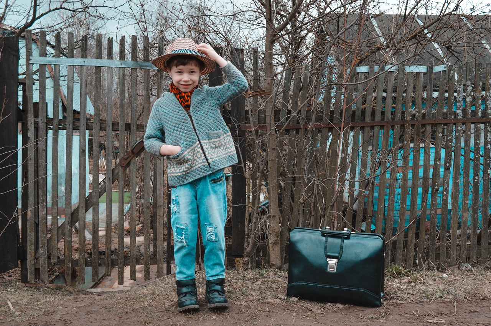

El acogimiento familiar es la medida de protección por la que, en virtud de una resolución administrativa, la guarda de una persona menor de edad se ejerce por una familia o persona que asume las obligaciones de velar por ella, tenerla en su compañía, alimentarla, educarla y procurarle una formación integral y comunitaria durante el tiempo que dure el acogimiento, todo ello en los términos descritos en el artículo 125 de la Ley 26/2018, de 21 de diciembre, de la Generalitat, de derechos y garantías de la infancia y la adolescencia (DOGV núm. 8450 de 24 de diciembre de 2018)) (en adelante Ley 26/2018) y en el artículo 3 del Decreto35/2021, de 26 de febrero, del Consell de regulación del acogimiento familiar (en adelante Decreto 35/2021).
Acogimiento familiar
Modalidades de acogimiento familiar

- Acogimiento familiar de urgencia: tendrá una duración máxima de seis meses y tiene como objetivo determinar las circunstancias que permitan decidir la medida de protección más adecuada para personas, principalmente, menores de seis años. Transcurrido el plazo máximo no será posible acordar una prórroga del acogimiento de urgencia.
- Acogimiento familiar temporal: tiene carácter transitorio, bien porque se prevea la reintegración de la persona menor de edad en su propia familia o bien en tanto se adopte una medida de protección más estable. Tendrá una duración máxima de dos años, salvo que el interés superior de la persona menor de edad aconseje la prórroga de la medida. Por la previsible e inmediata reintegración familiar o la adopción de otra medida de protección definitiva. En este supuesto se podrá prorrogar por el tiempo indispensable que no superará el año.
- Acogimiento familiar permanente: se constituirá bien al finalizar el acogimiento temporal por no ser posible la reintegración familiar, o bien directamente en casos de personas menores de edad con necesidades especiales o cuando sus circunstancias y las de su familia así lo aconsejen. La entidad pública podrá solicitar del juez, que atribuya a las familias acogedoras en la modalidad de permanente aquellas facultades de tutela que faciliten el desempeño de sus responsabilidades atendiendo, en todo caso, al interés superior de la persona menor de edad.
Modalidades de familia acogedora
- Extensas: toda familia que tenga un vínculo de parentesco con la persona menor de edad acogida, así como con aquellas que se encuentren unidas al niño, niña o adolescente por una relación afectiva previa y positiva a la de parentesco.
- Educadoras o ajenas: toda familia que no tenga un vínculo de parentesco con la persona menor de edad acogida o relación afectiva previa referida en el apartado anterior. El acogimiento se establece en atención al perfil de las personas menores de edad, la dedicación, características y disponibilidad del ofrecimiento para el que han sido declaradas aptas. En el ámbito de la Comunidad Valenciana las familias acogedoras denominadas ajenas por la Ley orgánica 1/1996, serán denominadas por la administración de la Generalitat como familias educadoras.
Referencia: https://inclusio.gva.es/es/web/menor/
En atención a la dedicación, disponibilidad y relación con la entidad pública protectora
- Genéricas: las familias declaradas aptas para el acogimiento de niños, niñas y adolescentes en quienes no concurre ninguna circunstancia cualificada que determine su especialización, estando su disponibilidad limitada a la formalización de acogimientos familiares temporales o permanentes menores de edad que dispongan de Plan de protección elaborado.
- De atención inmediata: las familias que se ofrecen para esta modalidad son formadas y declaradas aptas, previa valoración para formalización de acogimientos familiares de urgencia descritos en la letra a del apartado 1 del artículo 5, debiendo estar disponibles las 24 horas de los 365 días del año.
- Especializadas: las familias declaradas aptas para la formalización de los acogimientos a los que se refiere la letra b) del apartado 2 del artículo 5 de este decreto.
- De dedicación exclusiva: cuando así se determine por la Entidad Pública por razón de las necesidades y circunstancias especiales de la persona menor de edad en situación de ser acogido, percibiendo en tal caso la persona o personas designadas como acogedoras una compensación en atención a dicha dedicación.

Registro de Familias
La inscripción en el Registro de Familias Acogedoras de las personas declaradas aptas se realizará de oficio por la dirección territorial con competencia en materia de protección de la infancia y la adolescencia en la que tenga su domicilio la persona física o familia declarada apta. Podrán ofrecerse para acoger, sin discriminación alguna de conformidad con los principios y mandatos constitucionales, las personas mayores de edad residentes en la Comunidad Valenciana, tal y como indica el artículo 24.1 del Decreto 35/2021, mediante la presentación del modelo normalizado disponible en los servicios de atención primaria de los ayuntamientos, las direcciones territoriales competentes en materia de protección de la infancia y la adolescencia, como en las oficinas PROP y/o a través del correspondiente trámite prop correspondiente y en la página web de la Generalitat, preferentemente de forma telemática.
El ofrecimiento irá acompañado de la siguiente documentación:

- Cuestionario debidamente cumplimentado y firmado relativo al ofrecimiento para el acogimiento para el acogimiento familiar.
- DNI, pasaporte o NIE.
- Libro de Familia.
- Última declaración de la renta.
- Certificado de antecedentes penales de todos los miembros de la unidad familiar mayores de 18 años.
- Certificación negativa de los siguientes registros: Registro Central de delincuentes sexuales, todos los miembros de la unidad familiar mayores de 14 años; Registro Central para la protección de víctimas de violencia doméstica y de género; y Registro Central de Medidas Cautelares, requisitorias y Sentencias no firmes.
- Certificado médico oficial actualizado de las personas que se ofrecen para el acogimiento familiar.
- Certificado de empadronamiento.
- Certificado de inscripción en el Registro de Uniones de hecho, en su caso.
- Autorización de residencia en España en vigor, en el caso de personas extranjeras.
- En los ofrecimientos para la realización de acogimientos especializados, además, documentación acreditativa de su cualificación, formación específica y experiencia.
Referencia: https://inclusio.gva.es/es/web/menor/
Propuesta de resolución
En el caso de las familias extensas, el informe psicosocial realizado tras la formación y valoración, será suscrito por las personas técnicas de la entidad local que han realizado la formación y la valoración con el visto bueno de la persona que realice las funciones de coordinación de los Servicios Sociales de Atención Primaria, no tendrá carácter vinculante. Dicho informe se remitirá a la Sección competente en materia de acogimiento familiar de la Dirección Territorial de la provincia que instruya el expediente de protección de la persona menor de edad susceptible de ser acogida, la cual podrá solicitar que se aclare o amplíe con carácter previo a elevar la propuesta de resolución motivada a la Comisión de Protección de la Infancia y la Adolescencia de la dirección territorial competente.
Sesiones informativas en Valencia: https://inclusio.gva.es/documents/
Volver arriba